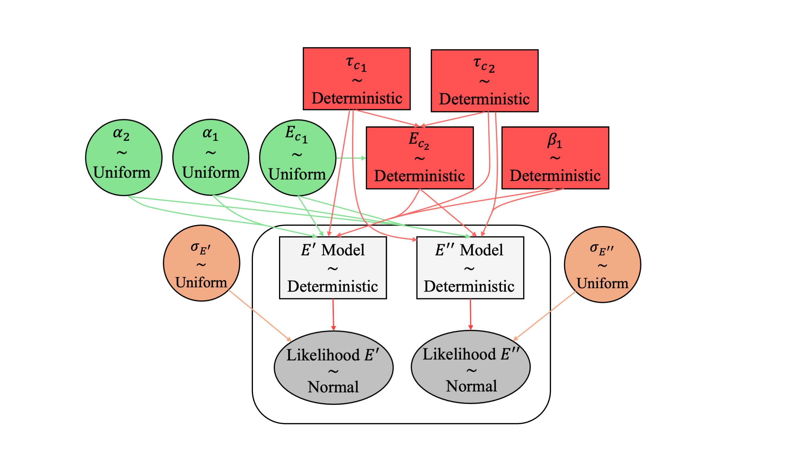

Probabilistic Calibration
Bayesian Calibration
We model the experimental data \(\boldsymbol{D} = \{E'(x_i), E''(x_i)\}_{i=1}^{N_d}\) using the statistical relation
where \(\boldsymbol{\mathcal{M}}\) denotes the deterministic model predictions and \(\boldsymbol{\varepsilon}\) represents measurement error. Both model parameters \(\boldsymbol{\theta}_m\) and errors are treated as random variables.
Error Model
Measurement errors are assumed independent and Gaussian:
with unknown standard deviations \(\boldsymbol{\theta}_e = [\sigma_{E'}, \sigma_{E''}]\). The full parameter vector is
Bayesian Inference
The posterior distribution is obtained via Bayes’ rule:
Under Gaussian error assumptions, the likelihood becomes
with logarithmic residuals
This formulation is consistent with the deterministic calibration objective while incorporating uncertainty.
Prior Distributions
Weakly-informative uniform priors are assigned:
Error parameters are assigned broad priors:
Dimensionality Reduction
Sensitivity analysis identifies \(\{\tau_{c_1}, \tau_{c_2}, \beta_1\}\) as non-influential; these are fixed at deterministic values. A physical constraint enforces
reducing the inference problem to
Please refer to our previous and current papers regarding the sensitivity analysis, influential parameter identification, and proposed constraint that links the phases.
Sampling
Posterior inference is performed using PyMC with the No-U-Turn Sampler (NUTS). Four chains are run with 4,000 tuning iterations and \(10^6\) posterior samples per chain, enabling efficient exploration of the parameter space.
Schematic of the Bayesian Calibration Framework
